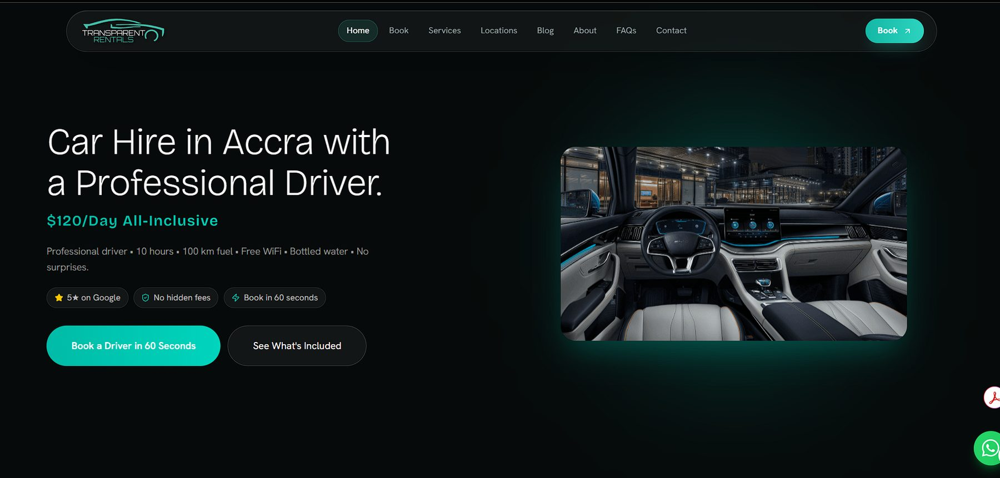
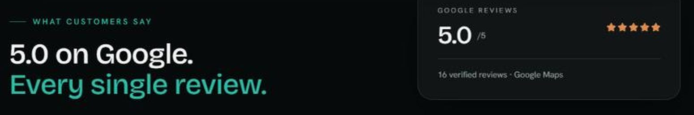
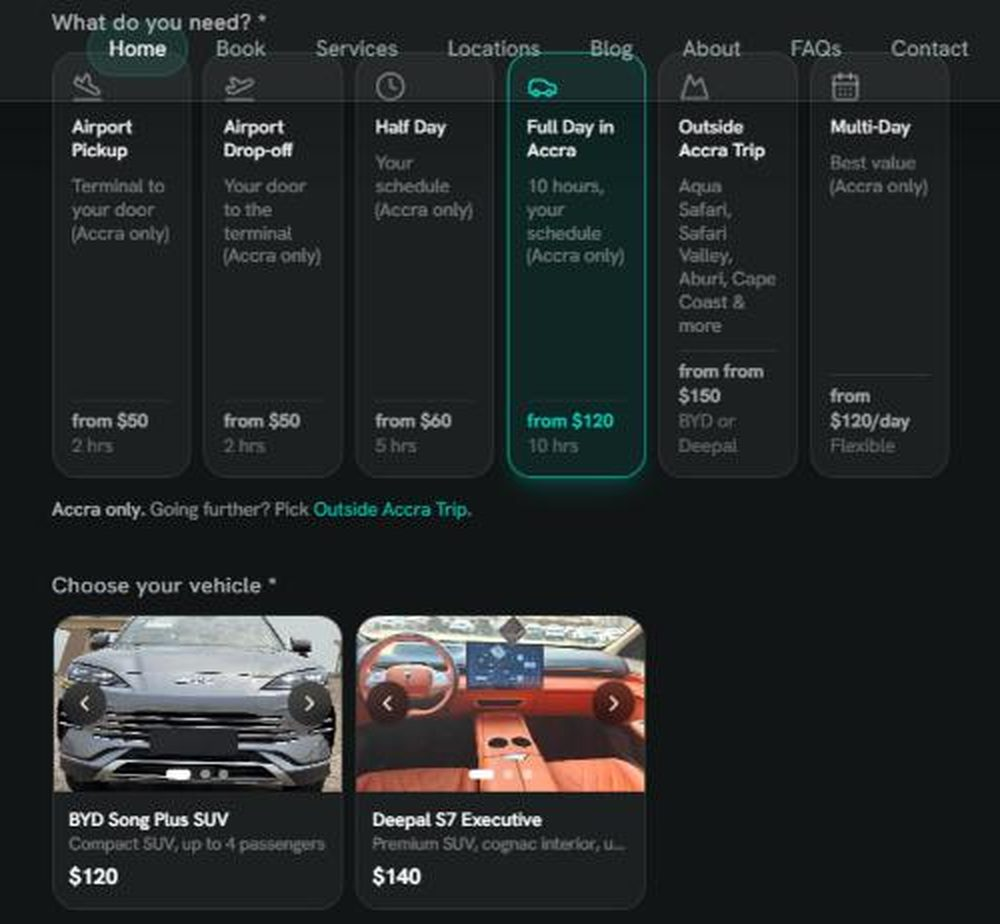
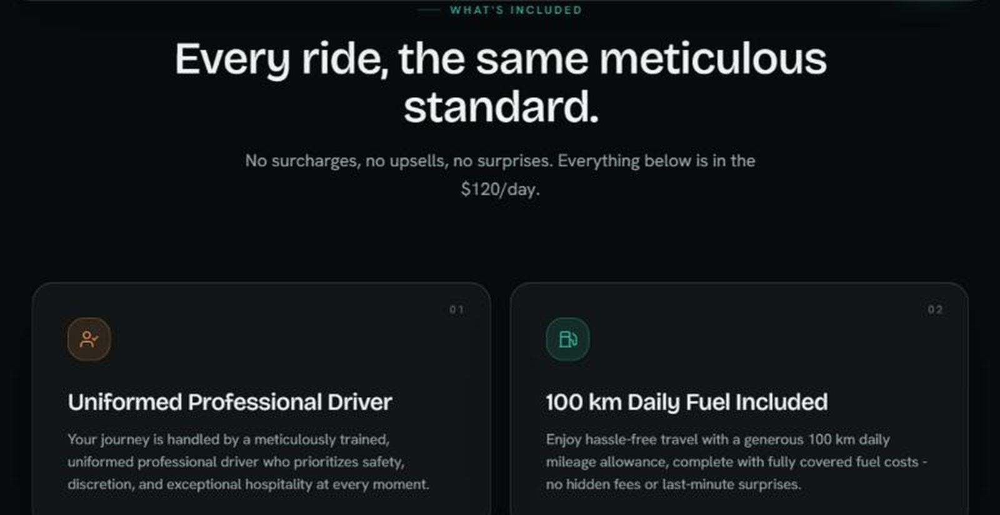

Making car hire in Accra predictable: one flat price, no surprises at the kerb
A chauffeur-driven booking service for airport transfers, day hire, multi-day bookings and trips outside Accra, taken from idea to a live product.
- Role
- Project manager, ideation to post-launch
- Team
- [BERLINDA TO CONFIRM: who built, drove, operated]
- Stage
- Live
- Timeline
- [BERLINDA TO CONFIRM: start and launch dates]
- Product
- transparentrentals.com ↗

01The problem
Hiring a car with a driver usually starts with a negotiation. The price moves once fuel, waiting time or distance comes up, and visitors landing at the airport have the least information and the most at stake.
The service is built against three problems:
- Price uncertainty: the final cost isn't clear until the trip is over.
- Reliability: no guarantee the driver or car turns up on time, especially for flights.
- Friction: back-and-forth by phone or chat before every booking.
Who it's for
- Arriving visitors and diaspora needing airport pickups and drop-offs
- Business travellers booking half-day and full-day hire in Accra
- Groups and families on multi-day trips
- Leisure travellers heading to Cape Coast, Aburi or Akosombo
02Evidence
Before building, we tested the idea with [BERLINDA TO CONFIRM: discovery method and sample, e.g. conversations with travellers, drivers, competitor price checks].
The most important thing we learned: [BERLINDA TO CONFIRM: the one or two insights that shaped the product].
Since launch, the public signal is reviews: the service is rated 5.0 on Google from 16 reviews.

03Decisions and trade-offs
The promise is one flat, all-inclusive price. Most product decisions came from protecting that promise.
| Package | Duration | From |
|---|---|---|
| Airport pickup | 2 hrs | $50 |
| Airport drop-off | 2 hrs | $50 |
| Half day | 5 hrs | $60 |
| Full day in Accra | 10 hrs | $120 |
| Outside Accra trip | — | $150 |
| Multi-day | Flexible | $120 / day |
A flat $120 day, with a fuel allowance
DecisionEverything is included: driver, fuel, WiFi and water, with 100 km of fuel a day.
Trade-offDistance beyond 100 km is charged at $0.50/km, so the flat price stays sustainable for long days.
Accra-only core packages
DecisionAirport, half-day, full-day and multi-day packages stay inside Accra.
Trade-offTrips outside the city get their own tier from $150, so the Accra price stays simple.
Two vehicles, not a catalogue
DecisionA standard SUV at $120 a day and an executive model at $140.
Trade-offLess choice, but a faster decision and a simpler fleet to run.
Non-refundable customer cancellations
DecisionProtects a limited number of daily slots.
Trade-offA stricter policy, balanced by a full refund or free rebooking if we cancel.
04Execution
Booking had to fit in about a minute. The flow reveals one choice at a time: service, then vehicle, then date and time. Rules are built in, so Accra-only packages point you to the Outside Accra tier if you need to go further. Customers who'd rather chat can book on WhatsApp.


What I did
- Defined the problem and shaped the idea into a service
- Wrote the requirements for the website and booking flow
- Designed the service packages and pricing structure
- Tested every package path before launch
- Planned the launch and marketing
- Led changes after launch based on customer feedback
What the team did
- Website build: [BERLINDA TO CONFIRM: who]
- Fleet and drivers: [BERLINDA TO CONFIRM: who]
- Daily operations and dispatch: [BERLINDA TO CONFIRM: who]
A change after launch: [BERLINDA TO CONFIRM: what changed, what triggered it, and the result]
05Outcomes
Other results to add: repeat customers [BERLINDA TO CONFIRM: %], web vs WhatsApp bookings [BERLINDA TO CONFIRM: split].
06What I learned
- Transparent pricing is a product decision, not a slogan. It shaped the packages, the fuel cap and the cancellation policy.
- A simple offer is easier to build, sell and run. Six packages beat a custom quote for every trip.
- Customers choose the channel. The web flow and WhatsApp have to work as one service.